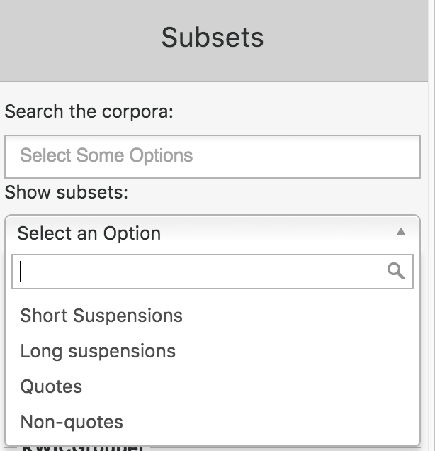
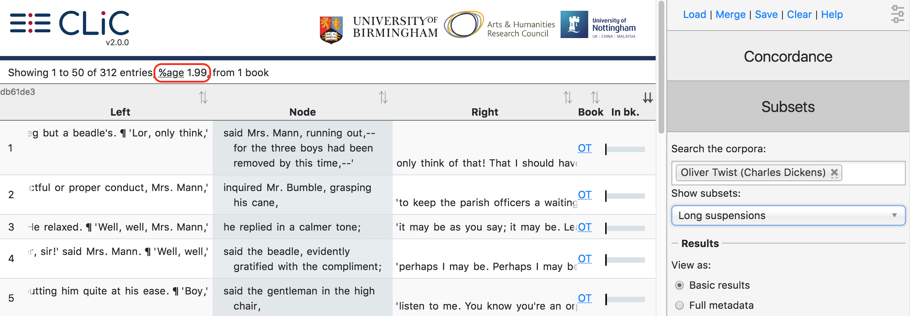
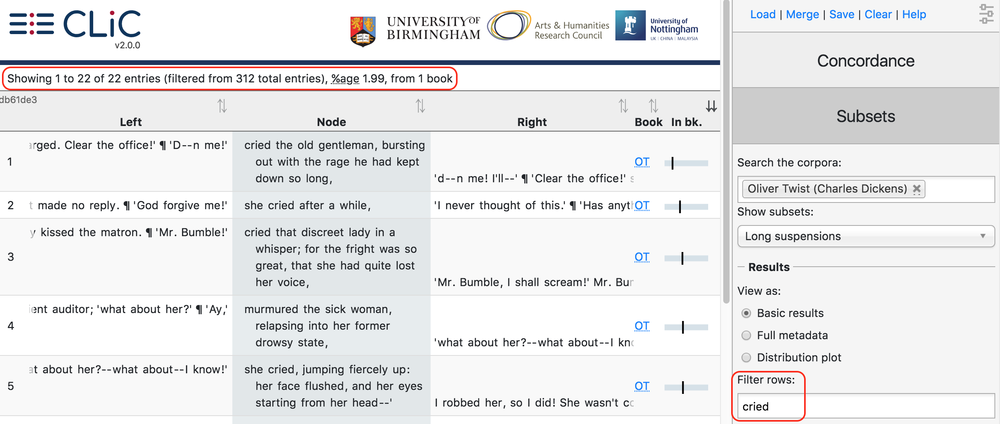
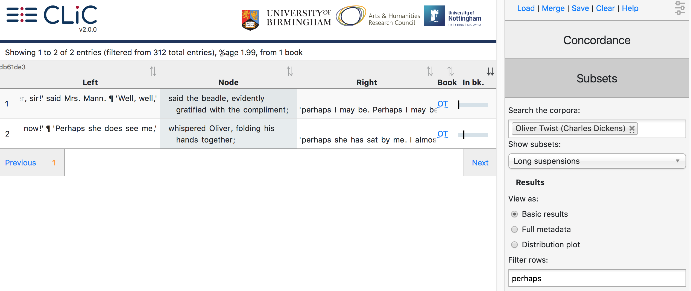
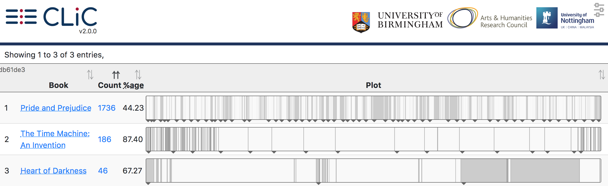
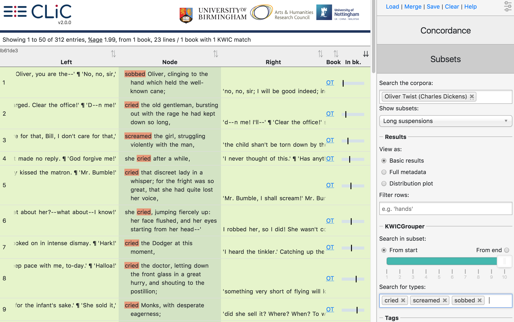
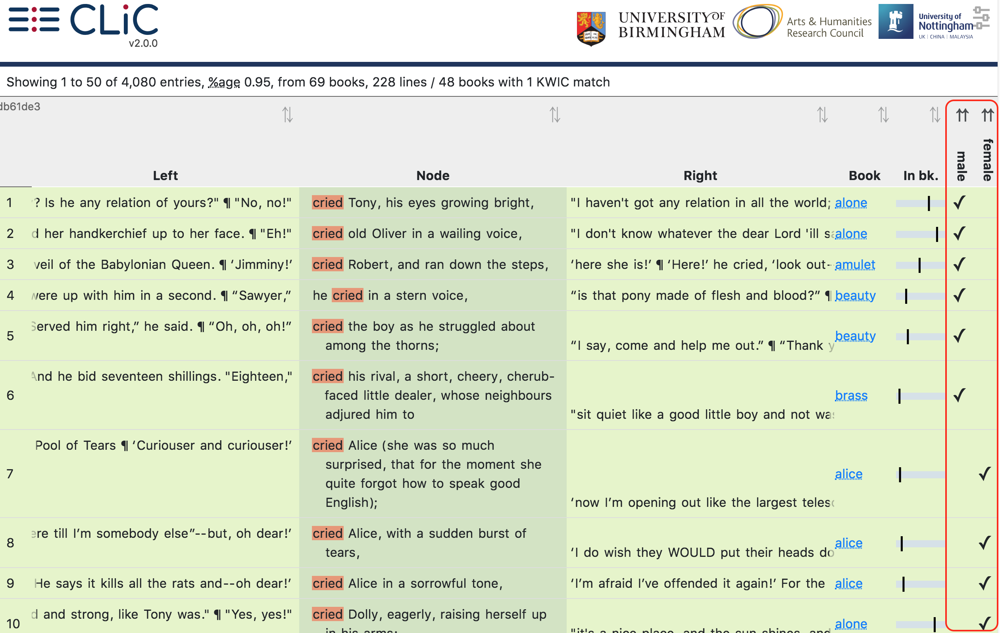

Subsets¶
The Subsets tab can display the full subset of your choice for the selected corpus. Therefore, you can retrieve all quotes or all long suspensions, etc. in any of the books or pre-selected corpora for further analysis. Note that we find this option most useful for the smaller subsets, i.e. quotes and suspensions; if you select the whole ‘non-quotes’ subset the output may become unwieldy.
Show subsets¶
Click onto the dropdown ‘Show subsets’ (see Fig. 34) to select a relevant subset (short suspensions, long suspensions, quotes or non-quotes). You will also need to choose a corpus.

Fig. 34 The basic subset options¶
Fig. 35 shows sample lines from the subset of long suspensions in Oliver Twist. You can then use the filter option to narrow down the lines and group them using the KWICGrouper. For subsets, the “relative frequency” is not given in terms of frequency per million words, as in the Concordance tab, but as the percentage of total words in the corpus found in the selected subset.

Fig. 35 The first few lines from the subset of ‘long suspensions’ in Oliver Twist¶
Results¶
Like in the concordance tab, this allows you to adjust the way the concordance output (‘table’) is displayed.
Filter rows¶
The filter option lets you filter the output by the rows that contain a particular sequence of letters, as described in the Filter rows subsection of the Concordance tab documentation. For example, you could filter suspensions for particular speech verbs like cried (Fig. 36).

Fig. 36 Filtering long suspensions in Oliver Twist for cried¶

Fig. 37 Filtering the co-text of long suspensions for perhaps in Oliver Twist¶
Note, however, that the filter will search through the whole row and therefore also accounts for words in the context, not only in the subset itself. For example, when searching through the subset of long suspensions in Oliver Twist and filtering rows for perhaps the results originate only from the co-text, as perhaps does not occur in long suspensions (see Fig. 37).
View as¶
Like the View as options for the Concordance tab, in Subsets you can view the ‘Basic results’ (concordance lines; book short title; link to ‘in bk.’ view) the ‘full metadata’ (+ chapter, paragraph & sentence numbers) or the ‘distribution plot’, which gives an overview of matching lines per book.

Fig. 38 The distribution plot view in the Subsets tab¶
In the case of the Subsets tab, these lines obviously are not concordance lines, but instances of the subset e.g. a quote or non-quote element or a short/long suspension. When you then create a distribution plot of a selected subset, you will therefore see how the subset is distributed across a book or corpus. Note that this operation may take a moment to load for a large corpus. Fig. 38 gives an example of three particular books with rather distinct quote distributions: whereas Pride and Prejudice contains a lot of dialogue – as you can see from the white quote subsets interspersed by grey non-quotes – both The Time Machine and Heart of Darkness contain much longer quote chunks by a key character telling a story.
KWICGrouper¶
If you want to restrict your search to the subset itself, the KWICGrouper is the better option; it will also highlight your search terms, as described in the Concordance section. The Subset KWICGrouper works like the Concordance KWICGrouper, with the exception of its search span which operates only on the subset itself. See Fig. 39 for an illustration of the Subset KWICGrouper searching for lines with cried, screamed and sobbed.

Fig. 39 The search span of the Subset KWICGrouper applies to the subset; not to the co-text¶
Manage tag columns¶
Just like in the Concordance tab (see Concordance), subset rows can be annotated with user-defined tags. Fig. 40 shows a potential application of tagging subsets: long suspensions in the 19th Century Children’s Literature (ChiLit) corpus containing cried are tagged for whether the crying character is male or female. Note that this screenshot just illustrates the technique; it does not represent the actual gender distribution of cried in the ChiLit long suspensions.

Fig. 40 Tagging subsets – here, long suspensions in ChiLit containing cried are tagged for character gender¶